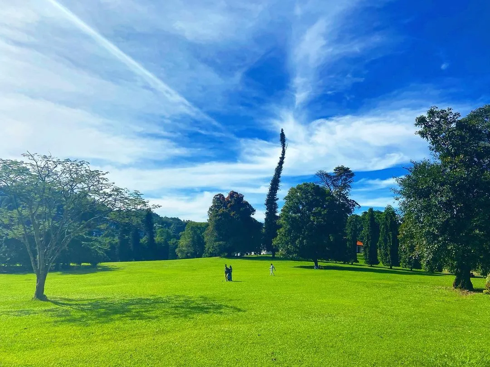
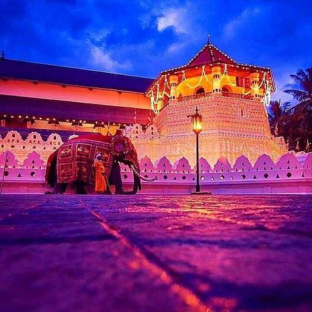
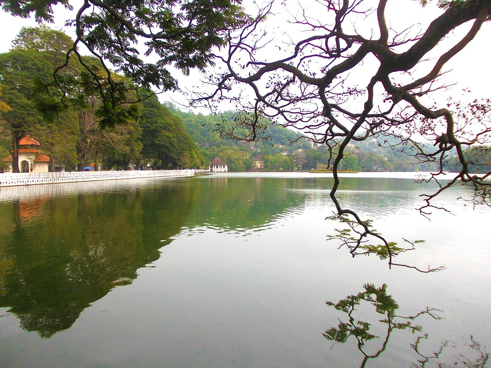

_Wonder of KANDY_
Royal Botanical Garden Peradeniya
Royal Botanical Gardens in Peradeniya is the oldest formal gardens in Sri Lanka. It is located 460 Meters above the mean sea level about 5 km to the west of the city of Kandy in the Central Province of Sri Lanka.
Royal Botanic Gardens Peradeniya attracts approximately 2 million local and foreign visitors annually. The garden includes more than 4000 species of plants, including orchids, spices, medicinal plants and palm trees and is renowned for its collection of orchids and the long, palm framed pathways.
is managed by the Division of National Botanic Gardens of the Department of Agriculture and the National Herbarium of Sri Lanka is attached to it as well. It encompasses a total area of 147 acres. Though the groundwork for the current gardens were laid in 1821 by Alexander Moon, the origins of the Botanic Gardens date as far back as 1371 when King Wickramabahu III ascended the throne and kept court at Peradeniya near the Mahaweli river.
Sri Dalada Maligawa
Temple of the Tooth Relic is an important historic and religious site in Sri Lanka. This golden-roofed temple hosts the tooth of the Buddha, an important Buddhist relic. The tooth relic is kept inside a golden casket in the shape of a Stupa (Buddhist temple). The temple is located in the royal palace complex and is a reason for Kandy being a UNESCO world heritage site. The site lies in Sri Dalada Veediya in the heart of the Kandy town.
The temple of the Tooth Relic also known as Sri Dalada Maligawa consists of many buildings and structures. These include the Royal Palace, Audience Hall or Magul Maduwa and the Mahamaluwa. The Tooth Relic was initially placed in the three-storied shrine built by King Wimaladharmasuriya I near his royal palace. The Temple of the Tooth Relic has since being renovated a few times.
The golden canopy over the main shrine of the Temple of the Tooth Relic was built in 1987 by the then Prime Minister Ranasinghe Premadasa. The holy temple sustained damage from bombings both by Janatha Vimukthi Peramuna in 1989 and by Liberation Tigers of Tamil Eelam in 1998. However, it was fully restored each time.
Kandy Lake
Opposite Dalada Maligawa is a large artificial lake that was constructed in 1807. Fenced by white stone pillars, it is one of the most beautiful places in Kandy to visit.Spend some time observing the birds and the lizards and ducks idling along the water's edge. There is a small island in the middle of the lake, which you can see up close if you go on a boat ride. Kandy Lake is more enjoyable early in the morning when mist surrounds the area, and the weather is quite refreshing. It is also one of the romantic places in Kandy to visit at night when the city's chaos has subsided and tranquillity takes over.